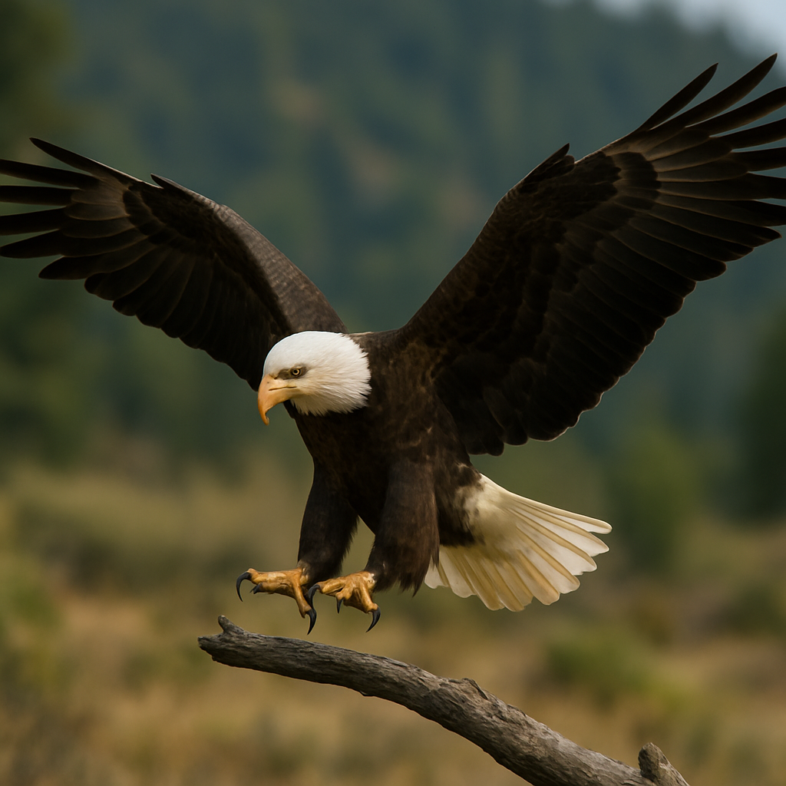
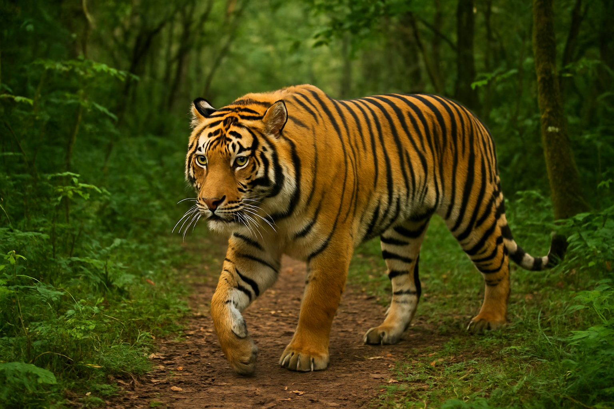
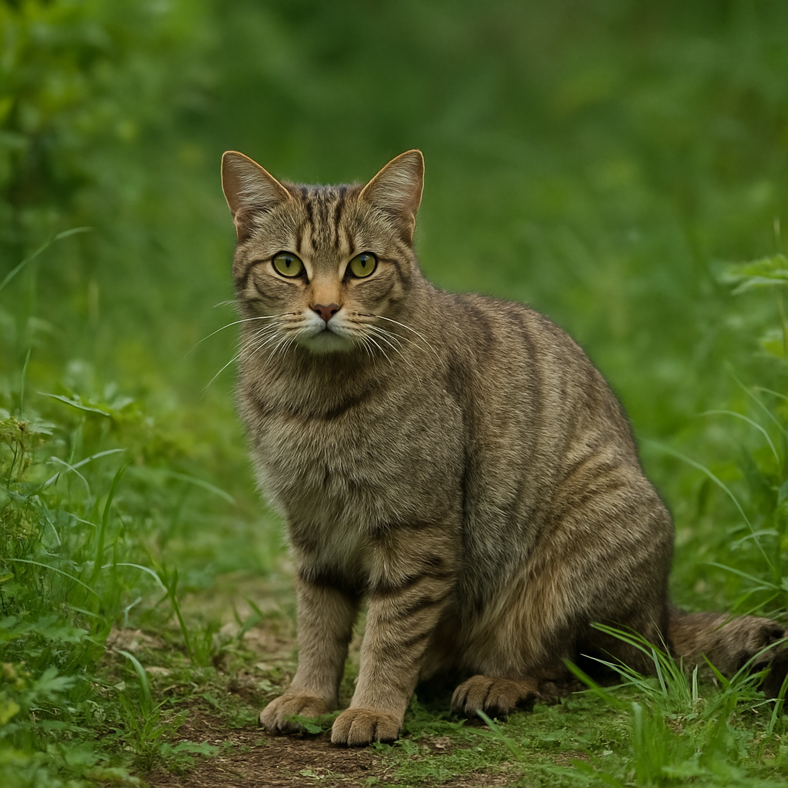

Danau Toba, Sumatera Utara



Danau Toba adalah danau vulkanik terbesar di Asia Tenggara. Dikelilingi oleh pegunungan dan pulau Samosir di tengahnya, tempat ini menawarkan panorama yang luar biasa dan budaya Batak yang kaya.